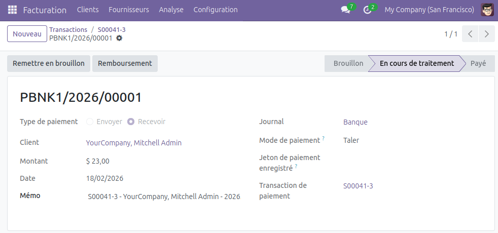
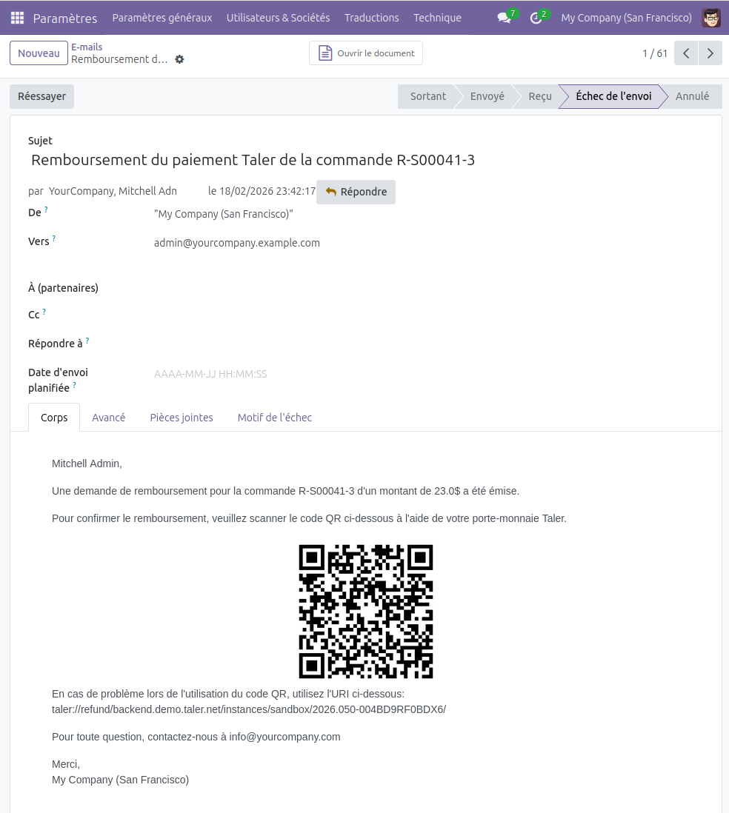

Remboursements¶
Remboursements et paiements en ligne effectués dans Taler¶
Pour rembourser un paiement effectué dans Taler, trouvez d’abord le paiement en question.
Pour Odoo 18, dans l’extension
Facturation, rendez-vous dansClients -> Paiementsdans la barre en haut de la page.Pour Odoo 19, vous y accéderez via
Clients-> Paiements.La liste des paiement effectués se trouve sur cette page.
Dans l’exemple suivant, nous voulons rembourser le paiement
PBNK1/2026/00029.Il est également possible, mais plus technique, d’activer le mode développeur dans les paramètres, de se rendre dans
Configuration -> Transactionsdans la barre en haut de la page, de sélectionner une transaction et de sélectionner le paiement dans le champpaiementsur la page de la transaction.
Cliquez sur le paiement que vous souhaitez rembourser.
Sur la page du paiement, cliquez sur le bouton d’action
Remboursement, en haut à gauche, et confirmez le remboursement.
{kind=link}

Vous pouvez déterminer le montant que vous souhaitez rembourser. Celui-ci ne peut être supérieur au montant de la transaction initiale.
Vous pouvez effectuer des remboursements partiels de montant différents (par exemple, une transaction de 30 euros peut-être remboursée de 5 puis de 10 euros).
Dans le cas de remboursements partiels, le montant total remboursé ne peut dépasser celui du paiement initial.
La cliente ou le client recevra un email par remboursement partiel, chacun contenant un code QR à scanner à l’aide de son porte-monnaie.
La confirmation du remboursement déclenchera la création d’une nouvelle transaction qui apparaitra dans la liste des transactions sous le nom
R-{Odoo numéro de référence}.Un email contenant le code QR de remboursement sera également envoyé à l’adresse email client.
Vous le trouverez dans la liste des emails envoyés, dans
Paramètres -> Technique -> Emails.Il se peut que vous deviez activer le mode
Développeurd’Odoo pour accéder à l’ongletTechnique.
Pour recevoir le remboursement, le côté client devra scanner le code QR à l’aide du porte-monnaie Taler.
{kind=link}

Note
Il vous faut une adresse email d’envoi valide pour que cette fonctionnalité soit utilisable.
Sinon, l’email sera généré et pourra être lu mais ne serra pas envoyé.